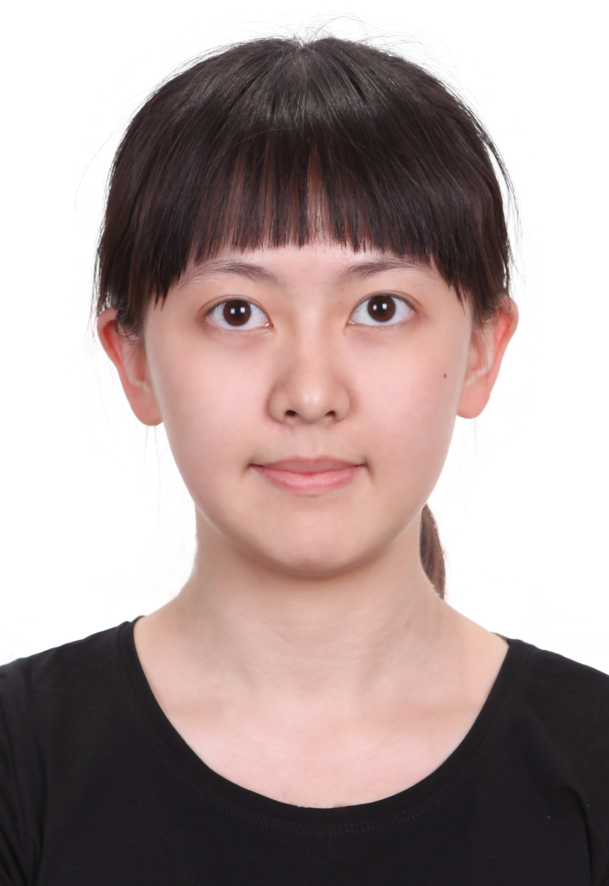
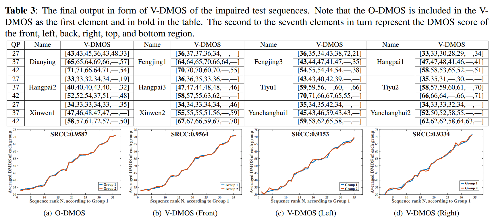
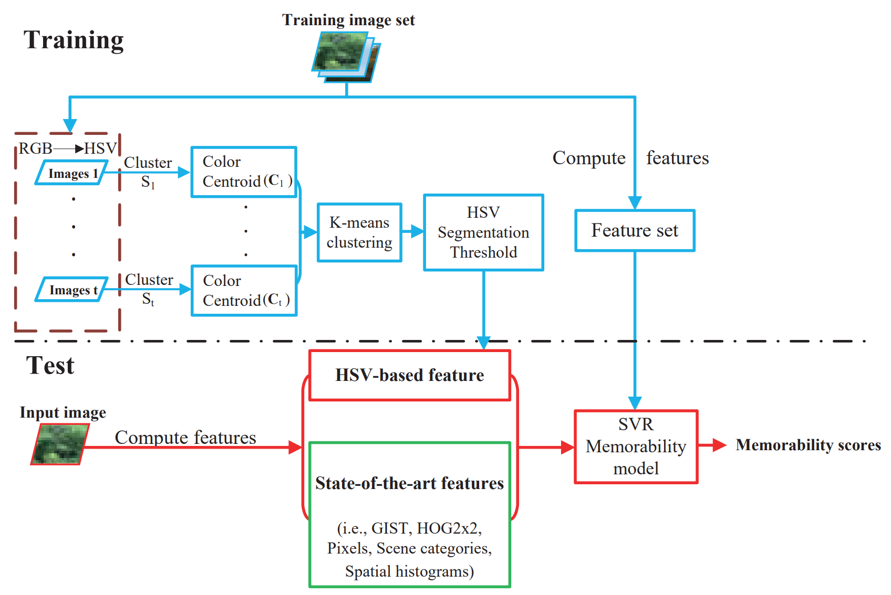

Lu, Jiaxin
|  | Lu, Jiaxin |
Biography
I am a Senior Researcher at the Data Intelligent Center of Tencent, China. I have been working for 5+ years on cutting-edge 2D/3D computer vision and multi-modality technologies, with 12 patents (as the first inventor) and several top-tier academic papers. I obtained the M.Sc. degree in 2019 at the MC^2 Lab, Beihang University, P.R. China, under the supervision Prof. Mai Xu, and obtained the B.Sc. degree in 2016 at Beihang University, P.R. China.
News
- One paper is accepted to IEEE Transactions on Image Processing (T-IP), which is collaborated with my husband :). [Paper]
Selected Publications
 |
Understanding and Predicting the Memorability of Outdoor Natural Scenes |
|  |
A Subjective Visual Quality Assessment Method of Panoramic Videos |
|  |
Predicting the Memorability of Natural-scene Images |
Awards
- Finalist of World’s FIRST 10K Best Paper Award, IEEE ICME 2017. [Certificate]
- Outstanding Graduate Students Award, Beijing, China.
{kind=link}
Teaching
- Spring 2017: Digital Image Processing, Beihang University, Teaching Assistant